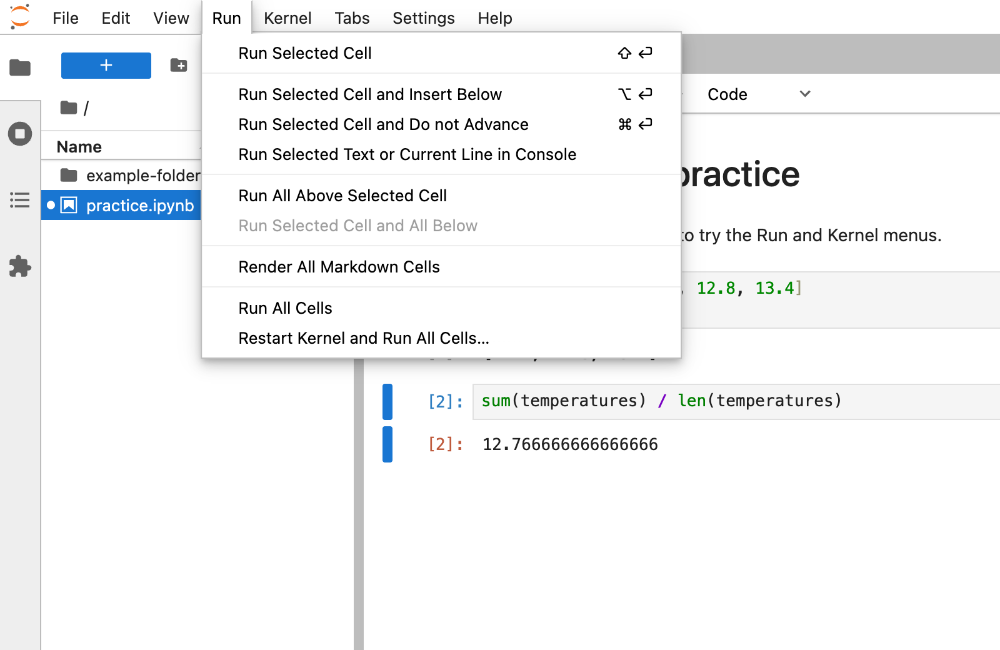
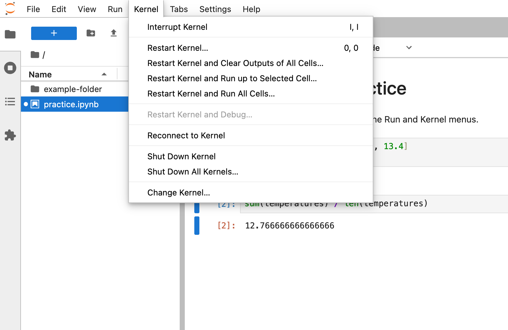
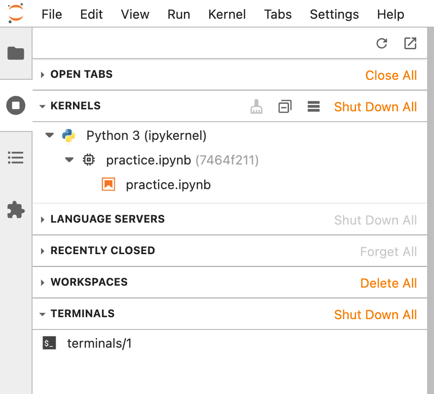
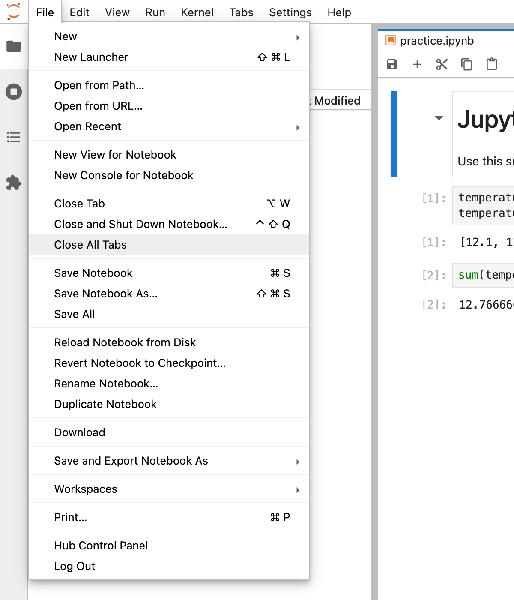
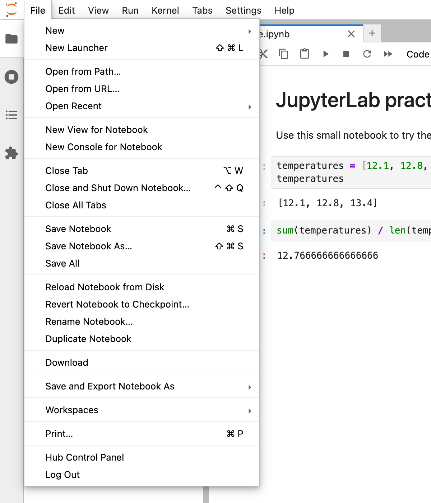
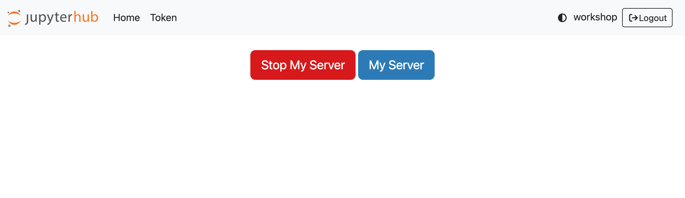
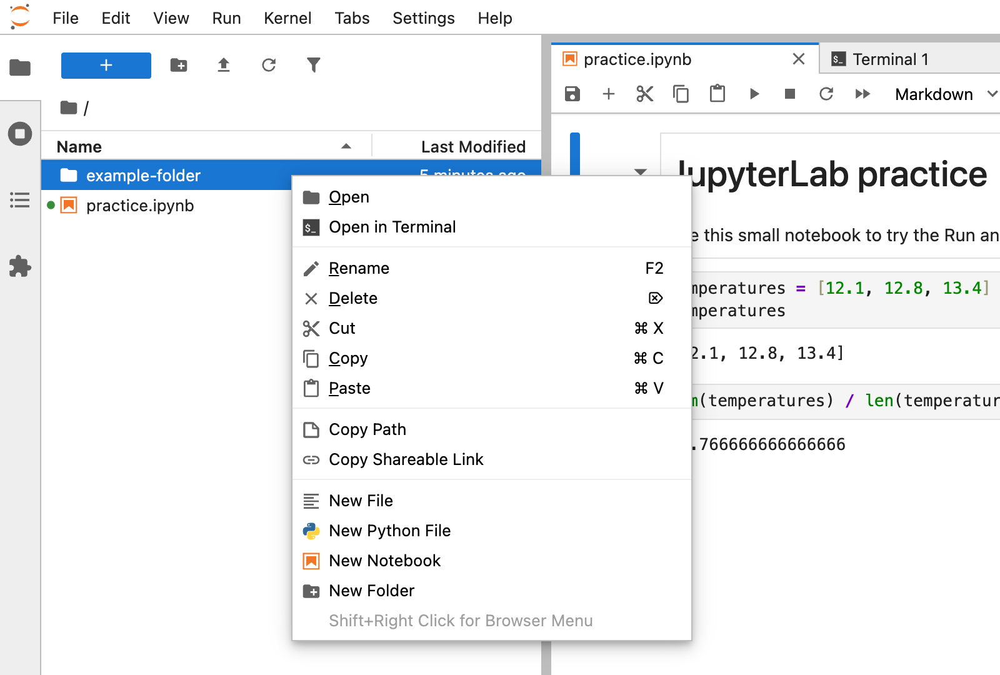
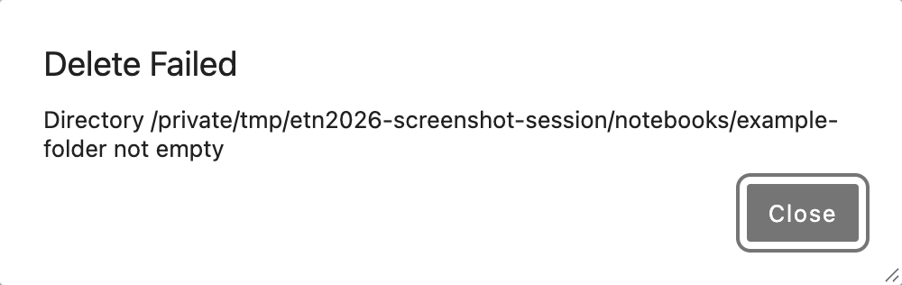

Practical tips for JupyterLab#
If you are not yet familiar with JupyterHub, JupyterLab or the Python environment, this page gathers a few practical tips that are useful during (and after) the workshop.
The screenshots below show a standard JupyterLab 4 session on JupyterHub, using a small practice notebook. Your server may have slightly different menus or styling. Keyboard shortcuts shown in the screenshots are for macOS.
Run the cells of a notebook#
Run one cell: click in it and press
Shift + Enter(or the ▶ button in the toolbar).Run all cells from the top:
Run > Run All Cells.Start again from a clean state:
Kernel > Restart Kernel and Run All Cells….Run everything up to where you are:
Run > Run All Above Selected Cell.


Fig. 1 Use the Run menu to execute all cells or just the cells above the selected one.#
While a cell runs, it shows [*] on its left and the kernel status (top right) is a
filled circle ●. When it is finished, [*] becomes a number such as [12].
To stop a cell that takes too long: ■ button in the toolbar, or Kernel > Interrupt Kernel.


Fig. 2 The Kernel menu contains the interrupt, restart and shutdown commands.#
Save your work#
File > Save Notebook (Ctrl + S, or Cmd + S on a Mac). Your home directory on
Pangeo@EOSC is persistent: files you save are still there the next time you log in.
Shut down kernels and close tabs#
Closing a notebook tab does not stop its kernel: it keeps running and keeps its memory. When you are done with a notebook:
Kernel > Shut Down Kernelfor the current notebook, orKernel > Shut Down All Kernels…for all of them, orthe Running Terminals and Kernels panel in the left sidebar (■ in a circle icon): click
Shut Down Allnext to “Kernels” and “Terminals”.


Fig. 3 Open the running sessions panel using the circle-with-a-square icon on the left. Kernels and Terminals each have their own Shut Down All button.#
Then close all tabs with File > Close All Tabs.


Fig. 4 After shutting down the kernels and terminals, choose File > Close All Tabs.#
Stop your server when you are done#
Your JupyterLab server keeps using CPU, memory and electricity on the shared infrastructure until it is stopped, even when you close the browser. Please stop it at the end of the session:
File > Hub Control Panelclick Stop My Server
(optional)
File > Log Out


Fig. 5 First open File > Hub Control Panel.#


Fig. 6 Then click Stop My Server on the JupyterHub page.#
Stopping the server does not delete your files. Next time, click Start My Server (or the one-click workshop link) to start it again.
Delete a folder#
In the file browser (left sidebar), right-click a file or folder and choose Delete.


Fig. 7 Right-click the folder and choose Delete.#
Depending on the server’s trash and deletion settings, a folder that still contains files may be rejected with a Directory … not empty error. Other servers can move the entire folder to the trash.


Fig. 8 This server refuses to delete a non-empty folder. The path in your error will differ.#
If you get this error, there are two options. For folders with nested subfolders
(such as Zarr stores) or hidden files (names starting with .), using the terminal
is usually quicker than emptying each folder in the file browser.
File browser: open the folder, select all files (
Shift + clickthe first and last), right-click >Delete, go back up and delete the now empty folder. If there are subfolders, empty and delete them first. Hidden files are not shown by default and can still block deletion.Terminal (
File > New > Terminal):cd ~ ls # check the exact folder name rm -rf name-of-the-folder
Warning
rm -rfdeletes the folder and everything inside it immediately and permanently. There is no trash. Check the name twice.
To clean up the workshop entirely, delete the pangeo-fish-etn2026 folder in your
home directory; the one-click link clones it again if you need it.
Upload and download files#
Upload: drag files from your computer onto the file browser, or use the ⬆ button.
Download: right-click a file in the file browser >
Download. (For a folder, compress it first in a terminal:zip -r results.zip my-folder.)